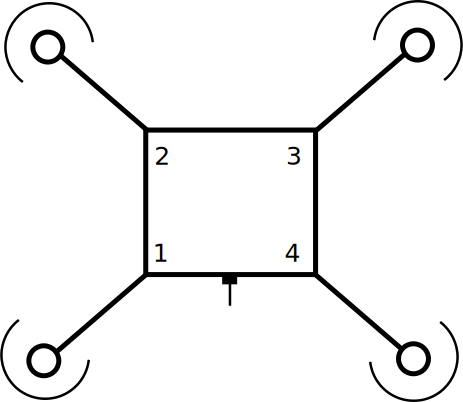

Spinnning tens of thousands times a second, four rotors cut through the air with their propellors. Their motion lifts them in unison, for they are connected together. In the center of the apparatus sits a bank of sensors, processors, and a radio acting in concert to control the great flow of air passing over it.
Some ways away, perhaps near, perhaps far, its pilot watches over it. Whether by program or controller, they hold the fate of the airborne being in their hands.
Quadcopters are fascinating marriages of physics, electronics, aviation, and computer science that have only become popular in the last couple of years. Examining them allows us to explore a number of interesting topics.
But first, a bit of an introduction...
What is This?
This post is the first in a series of articles surrounding quadcopters, how they work, why they work, and what makes them tick. While these articles will aim to be approachable for all humans they will be targetted mainly towards outreach educators, young scientists, and curious tinkerers.
Look for emphasized notes like this! They will be questions, key takeaways, and other important notes.
As we progress, readers will learn about aeronautics, physics, mathematics, electonics, and computer science. If at any point you become confused or have questions please feel encouraged to ask via email.
Who We Are
I, Ana Hobden, am a 4th year Computer Science student at the University of Victoria. I am interested in systems, infrastructure, networking, and embedded devices. Currently, I'm a new member of the (Mod)ularity Squad with advisor Yvonne Coady.
My partner, Bob Sedlock, is a Physics instructor at Camosun College. He's interested in relativity, fluid dynamics, and physics in general.
Our work is supported in part by NSERC, Camosun College, and the University of Victoria.
Choice for Experiment
Since our main goal is to explore the workings of the quadcopter, we sought a device that fit several desirable qualities:
- Measurable: Instrumentation for logging data is vital to producing any sort of interesting information.
- Modifiable: Also known as 'Hackable' in this context, it's useful to be able to change the behaivor of that which is being experimented upon.
- Repairable: One of the biggest concerns with quadcopters is the ease of replacing their oft-damaged parts.
- Compatible: In order to make sure others can replicate our experiments, we want to
- Community Friendly: We are extremely strong supporters of the Maker movement and open source, being able to contribute back is a huge boon.
We also had to consider budget. After surveying the field and considering our target audience, we decided to set our budget at under $400 CAD. It was important to find a quality device that was still accessible to others.
We ended up choosing the BitCraze Crazyflie 2.0 because it satisfied our requirements. The developers of the device are three awesome folks from Sweden!
In diagrams we will often simplify the quad into the following diagram:
The front is identified by the knob with an arrow. If the arrows around the motors appear black, it means they are holding steady, if they are green they are speeding up, and if they are red they are slowing down.
How Does It Work?
A quadcopter lifts itself into the air with four electric motors. In the Crazyflie's case, small coreless motors are used. These four motors are the actuators of the quadcopter and, under normal circumstances, are the only things that actually move on the device.
Attached to the four motors are propellers. Since the motors of the quadcopter spin propellers which push air downward. Because of this pushing of air downward there is an equal and opposite amount of force pushing the quadcopter upward. This characteristic is the third of Sir Isaac Newton's laws. Every action must have an equal and opposite reaction.
How can we use the four motors to keep the Quadcopter hovering in place?
As you may have learnt from physics, the total force acting on a body is equal to it's mass times its acceleration. To talk about forces, we'll use the idea of a Newton (N), you can think about a newton as about the weight of an apple you hold in your hand. It would exert about 1 N of force downward on your hand. In order to hold the apple stationary you must exert the same amount of force (1 N) upwards.
Now, our Quadcopter is about 28 grams in mass. Gravity is pulling down on the quad with 0.28 Newtons. This means that our quad must offset this force to hover in place.
Therefore four motors each must contribute an equal \( \frac{1}{4} 0.28 N \) to stay level in the air. If one motor contributes slightly more or less than it's equal share, that side of the quad would lift or fall accordingly.
\[ (Mass * Accceleration)_{Quadcopter} = Force_{Gravity} + Force_{Motor 1} + Force_{Motor 2} + ... \]
Getting Oriented
When reasoning about the location and orientation of a quadcopter we need to consider three values.
- Pitch is the up-down tilt. Having a positive pitch means the quad is tilted skywards, while a negative pitch means that the ground is approaching.
- Yaw is the rotation of the quad. Changing the yaw is equivalent to you turning left or right. A negative value turns the quad counter clockwise, a positive value turns it clockwise.
- Roll is the rotational tilt about an axis running from the quad's central front to back. This is the equivalent of tilting to the side such that you are standing on one foot. A positive roll tilts the quad to the right, while a negative roll tilts it to the left.
Pitching, Yawing, and Rolling
In order to cause a change in Pitch or Roll we can cause motors on one side of the quad to contribute a bit more, and the motors on the other side to contribute a bit less.
How can we change yaw?
Yaw doesn't necessarily require the quad to tilt in a particular manner, instead, it requires it to rotate in place. A first guess that the quad might tilt slightly in order to somehow turn is quite valid, however the answer is more subtle than that!
In order to change it's yaw the quad utilizes the following strategy:
So how does this work? Well, the quadcopter must somehow exert a sideways force in order to turn.
Think about standing with one foot on a still merry-go-round, if you wish to cause it to spin you must push on the ground with your other foot one way, the ground then pushes you (and the merry-go-round) the other way.
But if the quadcopter can only push air downward with its motors, how does it rotate in place?
Equal and Opposite
Not all of the propellers are the same. Have a look at these two:
Do you see how one is "flipped" compared to the other? That's because if we had all four propellers the same the quad would simply not function correctly. Let's take a look!
With propellers paired up correctly:
With all propellers the same:
You can see how when all of the propellers are the same the quad is unable to take off and it tends to spin a bit. When the motors on the diagonal have matching propellers the quad performs as desired. Why? Notice the directions of the arrows of the motors:
See how the motors on any side counteract one another? That is, the go in the opposite direction. This is again because of Sir Newton's law, and indeed the mechanics of how yaw works.
During our later motors article we'll discuss this effect in detail and examine it's implications more deeply.
Looking Forward
Over the next few weeks we'll be posting articles on the following topics related to Quadcopters:
- Motors
- Sensors
- Stabilization
- Radio
We'll be introducting hands-on demos which you can replicate yourself (or with your class!) as well as Arduino tutorials for those interested in learning to work with these devices.